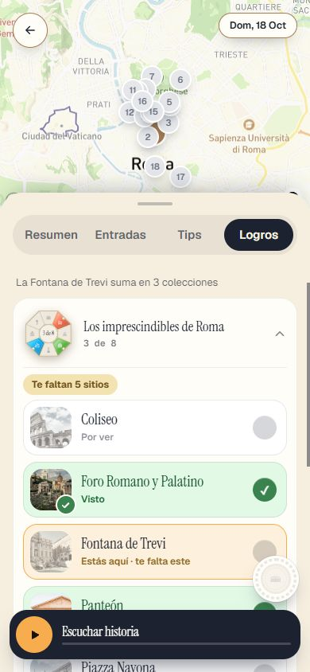
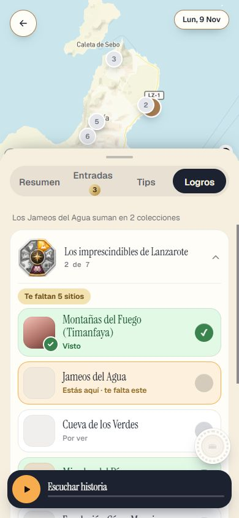
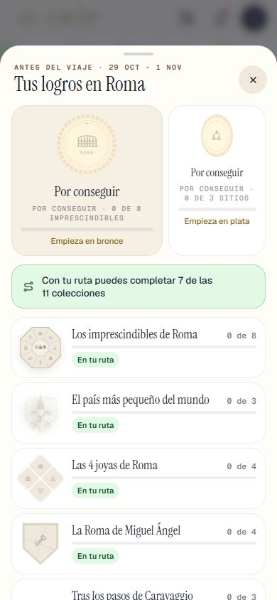
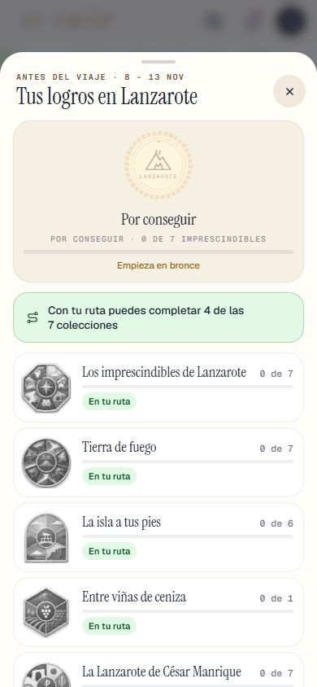
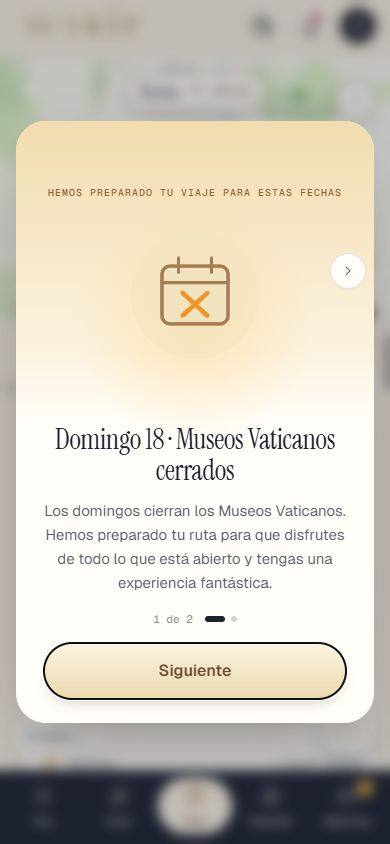

Repaso de la Tanda LG1
La pestaña «Logros» en la ficha de cada lugar, el sello «Por conseguir» y el botón antes del viaje, y los retoques de la HOY1 (radios por sitio, atardecer, siguiente parada). Lanzarote sigue OCULTO (solo administrador). Marca cada punto en tu teléfono cuando lo hayas comprobado.
0 · Antes de empezar ✅ Hecho — Prompt guardado (docs/dias/PROMPT_TANDA_LG1.md, la versión nueva, con las cosas nuevas del apartado 3; llegó entero, hasta «reinicia el api-server»); va después de la HOY1, ya subida; Lanzarote sigue ocultoDos agentes (A: la pestaña de la ficha; B: el sello, el botón y los retoques de la HOY1) y yo. Design al día con `LOGROS.zip` (el más nuevo, de las 20:14): cambian «Ficha Lugar», «Logros Boton» y «Mi Vitrina». Se quitó el barrido de las 365 fechas de Roma (tú lo dijiste): NO se ha corrido. Dónde: No es de móvil. 1 · La pestaña «Logros» en la ficha ✅ Hecho — Una cuarta pestaña (Resumen · Entradas · Tips · Logros) que solo sale si el sitio está en alguna colecciónSale en la Fontana de Trevi, el Coliseo, Jameos del Agua… y no en un sitio sin colección. Si el servidor no contesta (o el viaje no tiene fechas) tampoco sale. Dónde: DÍAS › un sitio › pestaña Logros. 
✅ Hecho — «La Fontana de Trevi suma en 3 colecciones» (el número de verdad) y una tarjeta plegable por colección con la insignia, el nombre, «3 de 8» y «Te faltan 5 sitios»En Lanzarote, la pieza de gajos de la LZ3 («Los Jameos del Agua suman en 2 colecciones»). La prueba comprueba el número y el «X de Y» de TODOS los sitios de todas las colecciones de Roma y Lanzarote contra los datos. Dónde: La misma pestaña. 
✅ Hecho — Cada sitio de la lista con su estado: «Visto» (verde con ✓), «Estás aquí · te falta este» (naranja) y «Por ver»; al tocar uno se abre su fichaTocar un sitio abre su ficha encima y Volver vuelve a la de antes; el «Estás aquí» no se abre. Muchas fotos de Lanzarote salen en el color neutro de Design porque en pruebas no hay foto. Probado con el servidor de logros de mentira, no con tu cuenta real. Dónde: La misma pestaña. ⚠️ A medias — Gratis o pase: la misma regla que la hoja de logros de hoySin pase la pestaña sale cerrada, en gris y con candado, y al tocarla abre el aviso del pase. Probado con el servidor de mentira. Dónde: Sin pase, ficha de un sitio con colección. 2 · El sello «Por conseguir» y el botón ✅ Hecho — Antes de conseguir nada: el sello en gris con el dibujo del destino, «Por conseguir · 0 de 8 imprescindibles», «Empieza en bronce» (el Vaticano «Empieza en plata»), la línea verde «Con tu ruta puedes completar 7 de las 11 colecciones» y «En tu ruta»Lo que NO era igual a Design y cambié: el gris del sello (antes apagado al 55 %, ahora gris cálido), la línea del sello (antes «0 de 8 imprescindibles», ahora «Por conseguir · 0 de 8 imprescindibles»; en Lanzarote «· 0 de 7 imprescindibles») y el color de «Empieza en bronce» (ocre). Ya estaba igual: el botón, el aro a rayas, la línea verde, «En tu ruta» y los estados 3a, 3c y 4a. Números de verdad: Roma 7 de las 11 colecciones; Lanzarote 4 de las 7. No he tocado los tonos pequeños de las etiquetas (la app usa champán/marrón donde Design usa frambuesa; es la paleta general). Dónde: Botón de logros › Tus logros antes del viaje. 
✅ Hecho — Lo mismo en Lanzarote con sus datos, y el botón flotante antes del viaje (el sello gris con el aro a rayas)Los demás estados del botón (bronce a diamante, el puntito) son los de siempre. Dónde: Hoja de logros de Lanzarote (administrador), antes del viaje. 
3 · Retoques de la HOY1 ✅ Hecho — Radios: «Ya estás aquí» y la foto usan el radio de cada sitio de los datos de logros (La Graciosa y Timanfaya, 2.500 m); sin radio, 150 m y 800 mEl móvil no se baja los datos: pide una vez por parada su radio a `/api/logros/cerca`. La foto libre usa el radio entero del sitio (antes se recortaba a 800 m); el Visto sigue en 150 m y los avisos del juego («Algo brilla…») siguen recortados a 800 m. Comprobado con datos reales y por prueba; en el móvil hace falta estar allí. Dónde: HOY, en el sitio. ✅ Hecho — El atardecer (H13) en Roma y Lanzarote, desde 2 horas antes, con parada de atardecer («Hoy ves el atardecer en El Golfo: el sol se pone a las 18:04. Llega un cuarto de hora antes…» + [Cómo llegar]) y sin ella («Hoy el sol se pone a las 18:04. Si te apetece verlo, estos sitios están cerca:» con 2 o 3 sitios, su tiempo y [Cómo llegar]; en Lanzarote «Aquí el sol cae al mar.»)Sitios de atardecer marcados en nuestros datos: Roma: Pincio, Janículo, San Pietro in Montorio, Castillo y Puente Sant'Angelo, Ponte Sisto. Lanzarote: El Golfo, Faro de Pechiguera / Playa Blanca, Famara, Los Hervideros, Janubio y Montaña Bermeja. Si el día no trae la hora del sol, se calcula con la fecha (8-nov en Lanzarote: 18:04). Solo hay captura de la versión con parada (Pincio); la de «sitios cerca» está en la prueba. Dónde: HOY, desde unas 2 h antes de la puesta de sol. ⚠️ A medias — La siguiente parada en cuanto acabas la anterior: trayecto, [Cómo llegar], «Sal ahora…», [Escuchar historia] y [Tu entrada]; lo del sitio al llegar; [Ya he llegado] si el GPS no lo detecta; tocar la tarjeta abre la fichaYa estaba casi todo; añadí la línea pequeña visible «¿No te detecta el GPS? Ya he llegado» (antes estaba escondida en el título) y que el botón diga «Escuchar historia». Al tocar la tarjeta se abre la hoja «Sobre este lugar», NO la ficha completa de DÍAS (esa necesita datos del día que HOY no tiene): si quieres la ficha completa de DÍAS, es otro encargo. [Tu entrada] sale solo con pase y con entrada con código. Sin captura propia de [Ya he llegado]. Dónde: HOY › tarjeta de la siguiente parada. ✅ Hecho — Los umbrales del tiempo se quedan (lluvia 50 % o 0,5 mm; nubes bajas ≥ 80 %; rachas ≥ 55 km/h)Sin tocar. Dónde: No es de móvil. ⚠️ A medias — Las fotos de prueba del Supabase real: borra solo esas y di cuáles eranHabía 23 filas en la tabla `trip_photos` (y su archivo en el almacén `fotos-viaje`). BORRADA 1: id 56f029e6, trip «zz», 50×50 px, 782 bytes, creada el 4-nov a las 21:27 UTC (fila y archivo). NO borradas por duda (quedan 22): 12 filas del 4-nov entre 21:17 y 21:26 UTC con trip «dev-route-17938…» (720×960, ~8,9 KB, de 5 sesiones anónimas), que parecen de las pruebas automáticas de la HOY1 pero no son «3 o 4 diminutas»; decides tú. Las 9 de octubre y la del 11-oct (400 KB) son anteriores: no se tocan. Dónde: No es de móvil. 4 · La prueba ✅ Hecho — pruebaJutrip, las de logros de Roma y pruebaTandaLZ3 en 0; pruebaTandaLG1; capturasVer el informe. NO se ha corrido el barrido de las 365 fechas de `pruebaListas` (lo quitaste del prompt y dijiste que hoy no). Dónde: No es de móvil. Todas las capturas

lg1_boton_antes_1 lg1_hoja_antes_lanzarote_1 lg1_hoja_antes_roma_1 lg1_jameos_1 lg1_trevi_1